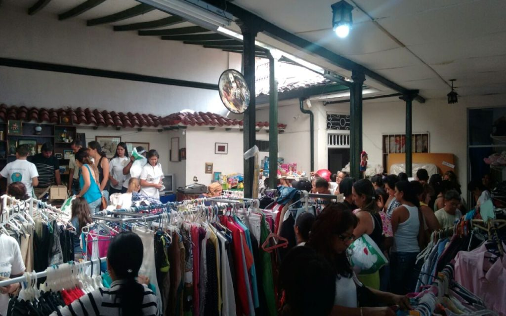

Durante el transcurso del año, FUNDAMOR realiza una serie de eventos para recaudar fondos que permiten la sostenibilidad de las niñas, niños, adolescentes y jóvenes en estado de vulnerabilidad, que pertenecen a los diferentes programas de la Fundación. Entre ellos, se encuentra el Pulguero Solidario, un espacio en el que personas, empresas e instituciones reúnen elementos, ropa, y artículos en buen estado, que ya no usan para donarlos a FUNDAMOR y así permitir que personas de escasos recursos tengan la oportunidad de adquirirlos. Esto nos permite que cada donación sea de beneficio para las personas que las adquieren. Los ingresos que se obtienen permiten que las niñas, niños, adolescentes y familias beneficiarias de FUNDAMOR continúen recibiendo atención integral.
¿QUÉ ES EL PULGUERO FUNDAMOR?
Pulguero FUNDAMOR: Solidaridad y Esperanza
Propósitos y Beneficios
- Recaudar fondos para programas de la Fundación
- Fomentar la solidaridad y el reciclaje
- Ofrecer artículos accesibles a personas de bajos recursos
- Garantizar atención integral a los beneficiarios de FUNDAMOR